Trust AI-written code.
Verify the verifier.
The agent can write the code. It can't redefine what "done" means.
Kotlin · Java · TypeScript · Python · Go · Rust · Scala · Clojure — works with Claude Code